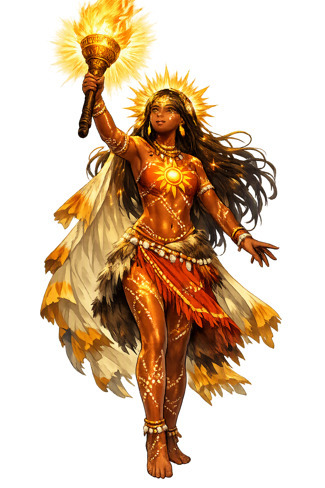

Stories of Gnowee
The Gnowee story belongs to the Wurundjeri-willam clan of the Woiwurrung language group. It explains the origin of the sun and the reason for its daily movement: the sun is not an indifferent orb but a woman still looking for her child. The myth is ecological as well as cosmological — it binds fire, food gathering, maternal care, and the rotation of day and night into a single narrative.
In the time before the sun, the world lay under an unbroken darkness. Gnowee, a woman of the Wurundjeri-willam clan country, camped with her small son, and each day went out to dig for yams with her digging stick. One day she wandered farther than she meant to, gathering food in the dark, and when she turned for home she could not find her camp — the country had closed over it like water. She searched until she was exhausted, calling for her boy, and the darkness gave nothing back. In her grief she gathered armfuls of stringybark, twisted the bark into a great torch, set it alight, and climbed with it into the sky, so that its light might fall on every part of the country at once and reveal where her child lay. That torch is the sun. The version best known beyond the community was retold by A. W. Reed from the nineteenth-century records of the Melbourne district; Wurundjeri tellers of today keep the story as their own.
Gnowee does not rest in one place, because her search is not finished. Across the day she carries the torch from one side of the sky to the other, and the light slides over the land as she goes: where the torch hangs highest, the light stands straight at noon; where it tilts, evening leans in. When the bark at last burns low and the light goes ragged, she stops — and that stillness is night, the long pause while she gathers fresh stringybark and coaxes a new flame from the old embers. Then the first grey kindling before dawn is her new torch catching, and the search resumes. The story reads the sun's whole daily round as a narrative, not a mechanism: day is the burning of the torch, dusk its guttering, night the gathering, dawn the re-lighting. Sky events that other traditions count and calculate, the Kulin telling explains with a mother's errand — light as labor, repeated without complaint, for as long as the loss lasts.
The story is also a teaching about fire and care. In the versions recorded in the Melbourne district, fire is not stolen from a deity or given by culture-heroes: it is carried, gathered, and tended by a woman, and its keeping is bound to women's work and women's knowledge. The digging stick that drew Gnowee away from camp is the same tool that feeds a family; the son left sleeping beneath the tree is the caution at the story's heart — a child unwatched is a child the dark can take. And there is grief, and the tradition does not soften it: the sky's most powerful light is explained as a bereavement still in progress, which dignifies every searching mother in the community. To tell the story is to teach several obligations at once — tend the fire, watch the children, respect the dark, and remember that those who carry light for others may be carrying loss.
Versions of the Gnowee narrative reached print through the records made by the nineteenth-century Protectors of Aborigines around Melbourne — men such as William Thomas, whose field notes preserved fragments of Woiwurrung language and story — and through later collectors who worked the same material into popular anthologies, most fully A. W. Reed's Aboriginal Myths, Legends and Fables (1982). That provenance needs to be stated plainly: the printed versions passed through colonial notebooks, and their spellings, details, and even their morals carry the marks of the recorder's hand. The authoritative telling today belongs to the Wurundjeri Woi Wurrung Cultural Heritage Aboriginal Corporation, which presents the story on country as a teaching about sky, fire, and care. The contrast between the two afterlives — a museum-piece in an old anthology, a living lesson on the Yarra — is itself part of the story's meaning.
Light, Search, and Maternal Devotion
Gnowee is the sun of the Wurundjeri people. In the Kulin telling she was once a woman who went up into the sky carrying a bark torch, searching for the child she had lost in the eternal darkness below. Her daily journey across the heavens is that search still in progress: when her torch burns bright, the world is day; when it dims and gutters, evening comes; when she stops to rekindle it, night falls. She is therefore light-giver, wanderer, and bereaved mother at once.
Her torch is the sun itself; she illuminates the land so that life can continue and the search can go on.
The sun's daily movement is interpreted as a mother still looking for her lost son beneath the dark earth.
Dawn, noon, dusk, and darkness are read as the changing state of her bark torch rather than as separate powers.
Her story anchors a specifically Woiwurrung understanding of sky, country, and the moral obligations carried by fire.
From the original script to the living URL
Gnowee
The name survives in scholarly transliteration. Gnowee is the standard Aboriginal romanisation, documented in academic sources — “The sun”. Because the spelling uses only Latin letters, the form is the same in both ASCII and Unicode.
No indigenous writing system is securely attested for individual aboriginal names. The form shown is a modern scholarly transliteration.
gnowee
The plain gnowee form is identical to the Unicode restoration. Because this name is already written in Latin letters, no diacritics, stress, or script information were lost — only capitalization differs.
Gnowee
The Unicode restoration does not need to recover lost marks for Gnowee. Its value is canonical spelling and consistent cataloguing, not the reconstruction of erased orthography. The domain is readable as-is to both DNS and humanity.
Gnowee.com
This restoration is written entirely in ASCII letters — no Punycode encoding stands between Gnowee and the DNS. The domain reads identically to machines and to human eyes.
Owned, ideal, and ASCII forms of Gnowee
Gnowee
The full Unicode restoration. gnowee.com is not in the PuniCodex collection — it is watched for release; if it drops, this temple upgrades to an owned flagship.
How Gnowee was spoken
How Gnowee is preserved in writing
No indigenous writing system is securely attested for individual aboriginal names. The form shown is a modern scholarly transliteration.
Contribute scholarly provenance →Gnowee invites meditation on the inseparability of love and loss. The sun rises not because it is a machine but because a mother is still looking. That reading transforms the sky from a clock into a story: every dawn is the relighting of a torch, every noon the height of a search, every dusk the guttering of a flame that will be renewed.
Enter Extended Lore